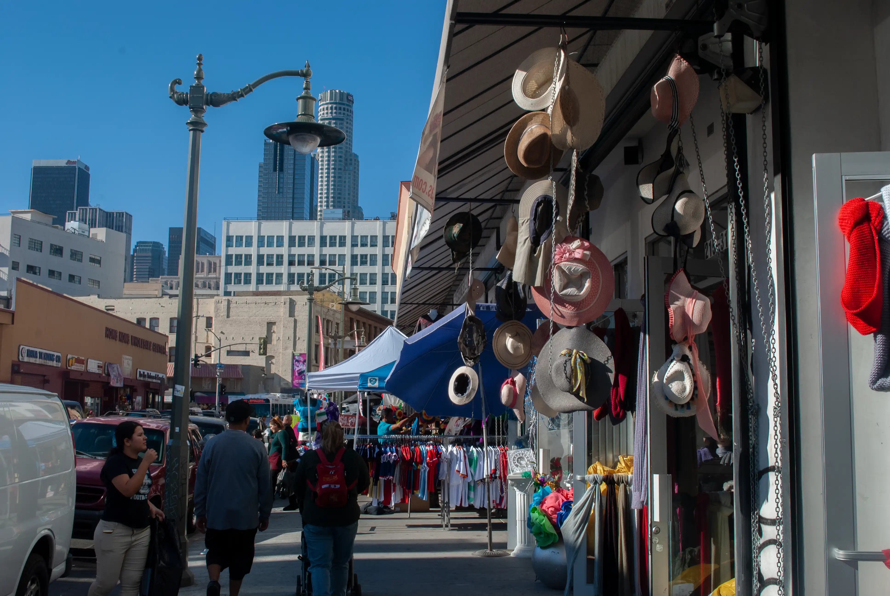
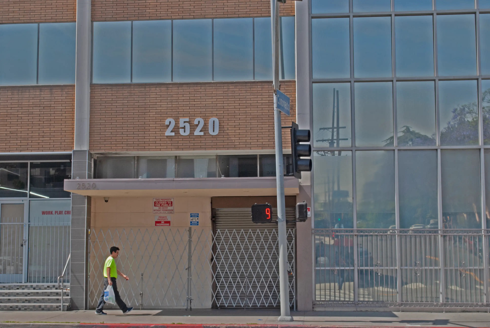
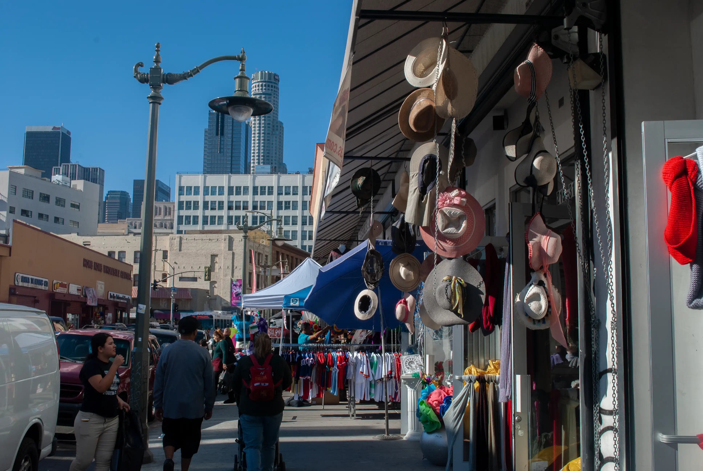
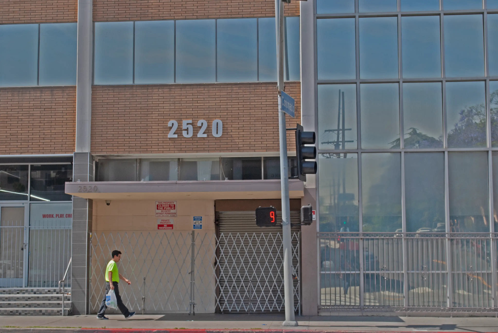

If Stoppages looks at the tension between human demands for infrastructure and the rounded geomorphology of Malibu, City pictures emphasizes the regularity of downtown Los Angeles, even to the scale of a storefront. Signs here aren’t mainly directions but coordinates, numbers, which are interesting in their own right.
City pictures are copyright Alexander Naylor and can only be used with permission. They are also available in postcard form or as prints with a maximum long axis of 40 cm. Please contact me here for more information or additional photos.
 


